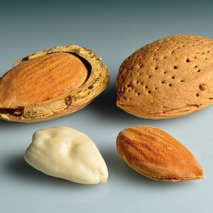
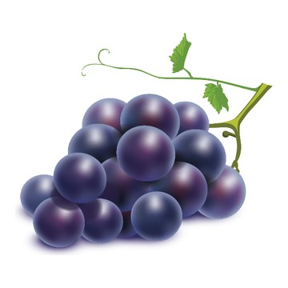
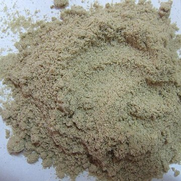

DẦU MASSAGE ORIKY

Chai 60ml135.000đ
Từ sơ sinhGIẢI QUYẾT VẤN ĐỀ GÌ CHO BÉ
Chàm sữaDa khô, nứt nẻ, đỏ rát do gió nắngCứt trâu (vảy da đầu)Vết thâm, sẹo mới sau khi da đã lành
THÀNH PHẦN → GIÚP GÌ CHO BÉ



Dầu hạnh nhân, dầu hạt nho, dầu cám gạo
Bù lớp dầu tự nhiên cho da — da mềm, không khô bong. Ba loại dầu có chất béo giống lớp dầu tự nhiên giữ nước của da; bôi vào để bù phần bị mất, giữ nước lại trong da. Với vảy cứt trâu: dầu ngấm vào làm mềm vảy để gội trôi, không phải cạy.
Caprylic triglyceride
Thấm nhanh, không nhờn dính — thoa được cả da mặt bé.
Gamma-oryzanol (cám gạo), vitamin E
Bảo vệ da trước nắng, bụi. Chất chống oxy hoá giúp lớp dầu trên da không bị “hỏng” khi gặp nắng — da non gặp nắng dễ thâm hơn da lành.
★ ĐIỂM MẠNH KHI KHÁCH SO SÁNH
Điểm mạnh: 3 loại dầu thực vật (cám gạo + hạnh nhân + hạt nho) vừa khoá ẩm vừa có vitamin E, chất chống oxy hoá từ cám gạo; thấm nhanh, không bết.
So với Johnson’s, Chicco: Johnson’s là dầu khoáng (tạo lớp phủ ngoài da, không bổ sung chất béo giống của da). Chicco có dầu cám gạo. Oriky kết hợp 3 loại dầu thực vật.
Nói với khách: “Da bé khô, mẹ massage dầu này sau tắm để khoá ẩm, da mềm lại.”
Lưu ý: Oriky có BHT (chất chống oxy hoá giữ dầu không bị ôi); Johnson’s và Chicco quảng cáo “không BHT”. Khách hỏi thì trả lời thật, không né.
CÁCH DÙNG: Thoa lên vùng da khô, mát-xa nhẹ, dùng trước hoặc sau khi tắm.
TỪ DẦU ORIKY → COMBO THEO VẤN ĐỀ DA
Khách hỏi mua Dầu Oriky → hỏi thêm vấn đề của bé → gợi ý combo đúng vấn đề đó.
1Chàm sữaDầu Oriky + Tắm gội Elemis + Kem bôi Elemis400.000đ
2Da khô, nứt nẻ, đỏ rát do gió nắngDầu Oriky + Tắm gội Elemis285.000đ
3Cứt trâu (vảy da đầu)Dầu Oriky + Tắm gội Elemis285.000đ
4Vết thâm, sẹo mới sau khi da đã lànhDầu Oriky + Kem bôi Elemis250.000đ
1Chàm sữa
Hỏi: “Má bé có mảng đỏ khô, bong vảy không chị? Bé có hay dụi mặt không?”
+ +
+
Cả bộ 400.000đtắm 200ml
- Dầu Oriky: Bù lớp dầu da chàm đang thiếu — da mềm, bớt bong vảy; thấm nhanh, không bết, thoa được da mặt.
- Tắm gội Elemis: Tắm, lau mặt nhiều lần trong ngày mà da không khô thêm; hỗ trợ giảm vi khuẩn ở chỗ bong tróc.
- Kem bôi Elemis: Rau má làm dịu mảng đỏ, giúp chỗ nứt, bong mau liền; Aquaxyl giữ nước — quan trọng nhất với da chàm.
“Da chàm vừa thiếu nước vừa thiếu dầu. Mẹ tắm và lau mặt bằng Elemis pha loãng để da không khô thêm, thoa kem cho dịu và giữ nước, rồi thoa dầu để khoá lại — đủ 3 bước thì da bé mới đỡ bong.”
Cách dùng: Tắm: 5ml : 5 lít. Lau mặt: pha 2ml : 2 lít nước sạch, 4–6 giờ lau một lần và sau khi bú, ăn dặm. Kem: lớp mỏng 2–3 lần/ngày. Dầu: thoa sau tắm.
⚠ Khuyên đi khám khi: Chàm rỉ dịch, đóng vảy vàng, lan rộng hoặc bé quấy khóc nhiều. Bé đang dùng thuốc bác sĩ kê thì dùng sản phẩm để duy trì, không thay thuốc.
2Da khô, nứt nẻ, đỏ rát do gió nắng
Hỏi: “Da bé có hay khô ráp, hay má đỏ rát sau khi ra ngoài trời không chị?”
+Cả bộ 285.000đtắm 200ml
- Dầu Oriky: Khoá ẩm bằng 3 loại dầu thực vật; vitamin E, chất chống oxy hoá từ cám gạo bảo vệ da trước nắng, bụi.
- Tắm gội Elemis: Làm sạch mà không làm khô da thêm — sữa tắm nhiều bọt kiểu xà phòng mới là thứ làm da càng khô.
- + Kem bôi Elemis (khuyến nghị thêm): Khi đã nứt nẻ, đỏ rát: rau má giúp chỗ nứt liền, làm dịu đỏ; kẽm oxyd che chắn khi ra ngoài. Loại duy nhất trong ba kem công bố dùng cho da bỏng gió, nắng.
“Da bé khô thì phải đổi nước tắm trước — nước thảo dược này sạch mà da không căng; tắm xong mẹ massage dầu để khoá ẩm. Chỗ nào đã nứt, đỏ rát thì thoa thêm kem.”
Cách dùng: Tắm: 5ml : 5 lít, không tráng lại. Dầu: thoa sau tắm, mát-xa nhẹ. Kem: lớp mỏng 2–3 lần/ngày và trước khi ra ngoài trời gió hanh, nắng.
Sản phẩm chưa công bố chỉ số chống nắng (SPF/PA) — không giới thiệu là kem chống nắng.
⚠ Khuyên đi khám khi: Da nứt sâu chảy máu, phồng rộp, nổi bọng nước, hoặc bé sốt sau khi phơi nắng lâu.
3Cứt trâu (vảy da đầu)
Hỏi: “Da đầu bé có mảng vảy vàng bám không chị?”
+Cả bộ 285.000đtắm 200ml
- Dầu Oriky: Làm mềm vảy để vảy tự bong, không phải cạy; sau đó dưỡng lại da đầu để vảy không đóng dày như cũ.
- Tắm gội Elemis: Gội trôi phần vảy đã mềm nhờ men đu đủ, không phải chà xát da đầu; hỗ trợ giảm vi khuẩn trên da đầu.
“Mẹ đừng cạy vảy. Thoa dầu lên chỗ vảy, để một lúc cho mềm rồi gội bằng Elemis, vảy sẽ tự trôi. Chai dầu dùng tiếp để dưỡng da đầu.”
Cách dùng: Thoa dầu lên vảy, để một lúc cho mềm, rồi gội bằng Elemis pha 5ml : 5 lít. Không chà xát, không cạy vảy.
⚠ Khuyên đi khám khi: Da đầu dưới vảy đỏ rực, rỉ dịch, có mùi, hoặc lan xuống mặt và người.
4Vết thâm, sẹo mới sau khi da đã lành
Hỏi: “Chỗ bé bị trước đây giờ còn thâm không chị?”
+Cả bộ 250.000đ
- Dầu Oriky: Giữ da non mềm; vitamin E, chất chống oxy hoá từ cám gạo giúp hạn chế thâm thêm khi ra nắng.
- Kem bôi Elemis: Rau má hỗ trợ làm mờ thâm, sẹo còn mới — da non lên phẳng, đều màu hơn; Aquaxyl giữ ẩm để da non liền đẹp.
- + Tắm gội Elemis (khuyến nghị thêm): Làm sạch mà da non không bị khô, bong sau tắm.
“Da bé lành rồi thì mẹ thoa kem rau má đều đặn để hỗ trợ vết thâm mờ dần, thêm dầu để da non mềm, đỡ thâm khi ra nắng. Sẹo càng mới thì càng dễ.”
Cách dùng: Kem: lớp mỏng lên vùng da đã lành, 2–3 lần/ngày, dùng đều thời gian dài; không thoa lên vết thương hở. Dầu: thoa sau tắm.
Chỉ nói “hỗ trợ làm mờ” — không hứa hết sẹo, không hứa số ngày.
⚠ Khuyên đi khám khi: Sẹo lồi, sẹo co kéo, sẹo do bỏng sâu → khuyên khám da liễu, sản phẩm không xử lý được nhóm này.
Sell-out kit theo sản phẩm · Công ty TNHH Dược Khoa Xanh · Giá OTC 01/04/2025